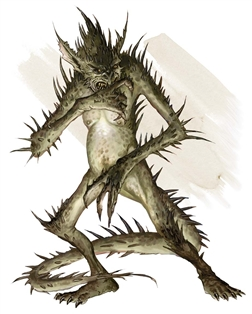

Barbed Devil
Creatures of unbridled greed and desire, barbed devils act as guards to the more powerful denizens of the Nine Hells and their vaults. Resembling a tall humanoid covered in sharp barbs, spines, and hooks, a barbed devil has gleaming eyes that are ever watchful for objects and creatures it might claim for itself. These fiends welcome any chance to fight when victory promises reward.
Barbed devils are known for an alertness that makes them difficult to surprise, and they attend to their duties without boredom or distraction. They use their sharp claws as weapons or hurl balls of flame at foes that try to flee them.